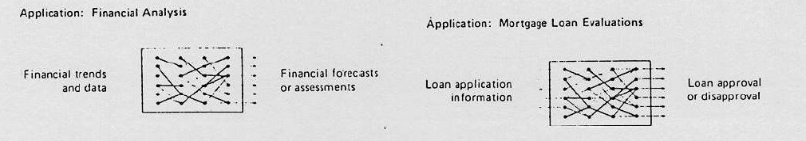
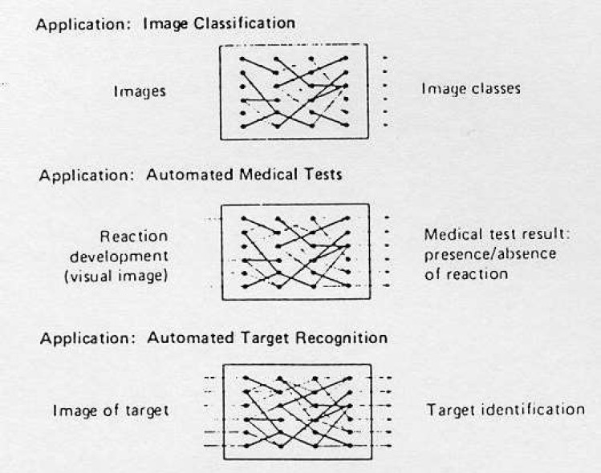
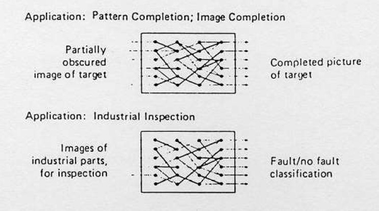
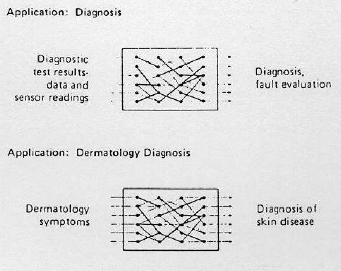
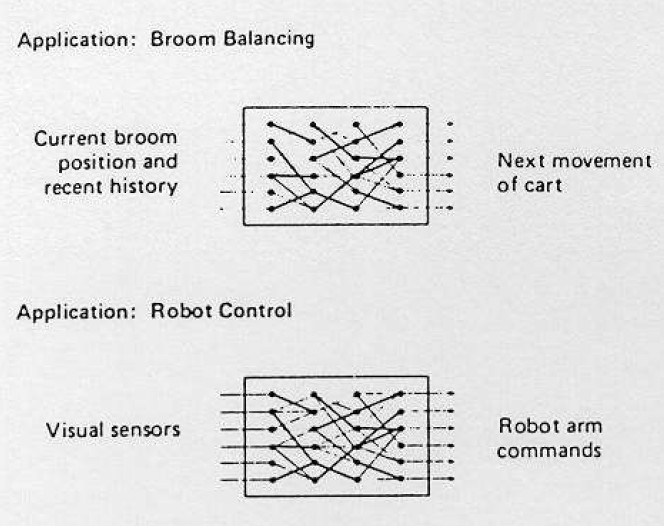
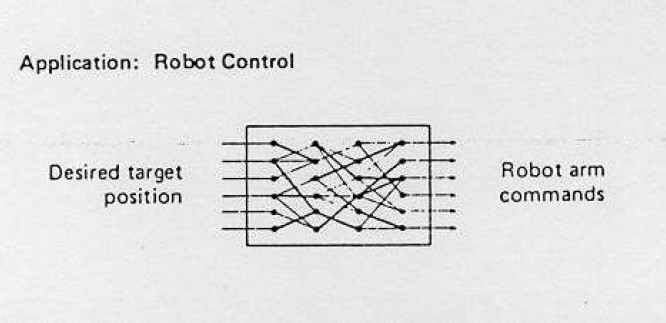
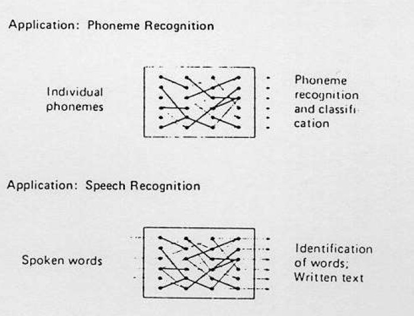
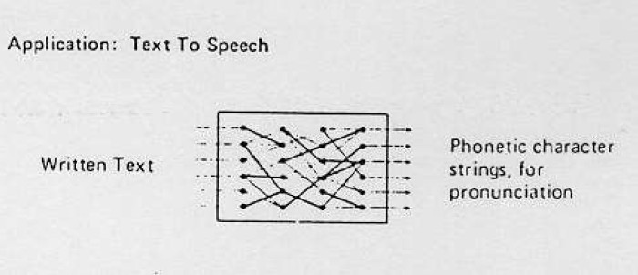
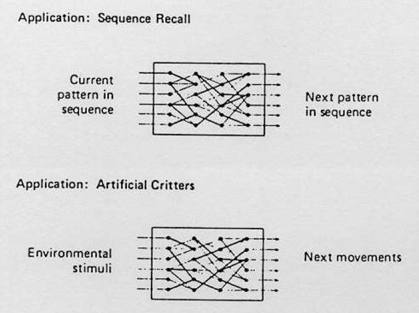

Creado por Ismael Jimenez - Octubre 2023
Las aplicaciones candidatas son aquellos problemas que en principio podrían ser resueltos con este tipo de tecnología que ofrecen las redes neuronales artificiales.
Las aplicaciones en desarrollo son aquellas en las que se han realizado los estudios oportunos del problema y se dispone de un prototipo de red al que se le ha entrenado para resolver una versión simplificada del problema.
Las aplicaciones demostradas son redes que de hecho ya están siendo utilizadas para resolver un problema real.
Disponer de una herramienta software de diseño de ANN El esfuerzo se debe dirigir a: diseño de la arquitectura o estructura de la red en la selección de los datos del conjunto de entrenamiento y de test.
El diseñador construye con el software apropiado la red especificando el número de capas, de neuronas y los tipos de conexiones.
Define los archivos o conjuntos de datos de entrada y salida, y debe elegir los parámetros de los cálculos internos de la red.
Seleccionar diferentes funciones de transferencia y procesamiento de las neuronas, así como construir variaciones de los modelos estándar.
En la fase de entrenamiento se debe especificar el número de iteraciones y la planificación de los cambios de los parámetros de aprendizaje.
Elección de la arquitectura como para la selección y prepocesado de los datos presentados a la red.









No todos los problemas de control pueden ser formulados mediante los métodos utilizados en el control convencional.
Para resolverlos de forma sistemática se han desarrollado un número de métodos que de forma colectiva se les llama Metodologías de Control Inteligente.
Entre las áreas de investigación más relevantes del Control Inteligente se encuentran las Redes Neuronales Artificiales y la Lógica Difusa.
Conviene utilizarla cuando se produce alguna de las siguientes condiciones: las variables de control son continuas, no existe un modelo matemático del proceso o es difícil decodificarlo, o bien el modelo es complejo y difícil de evaluarlo en tiempo real.
Cuando la aplicación requiere utilizar sensores y microprocesadores simples o cuando se dispone de una persona experta que puede especificar en reglas el comportamiento del sistema.
Es una lógica que permite llegar a conclusiones “razonadas” a partir de información ambigua o imprecisa.
Permite modelar situaciones o comportamientos que son vagos en sí mismos, es decir, se adapta mejor a la realidad que una lógica clásica, en dónde solo existen dos valores a decidir.